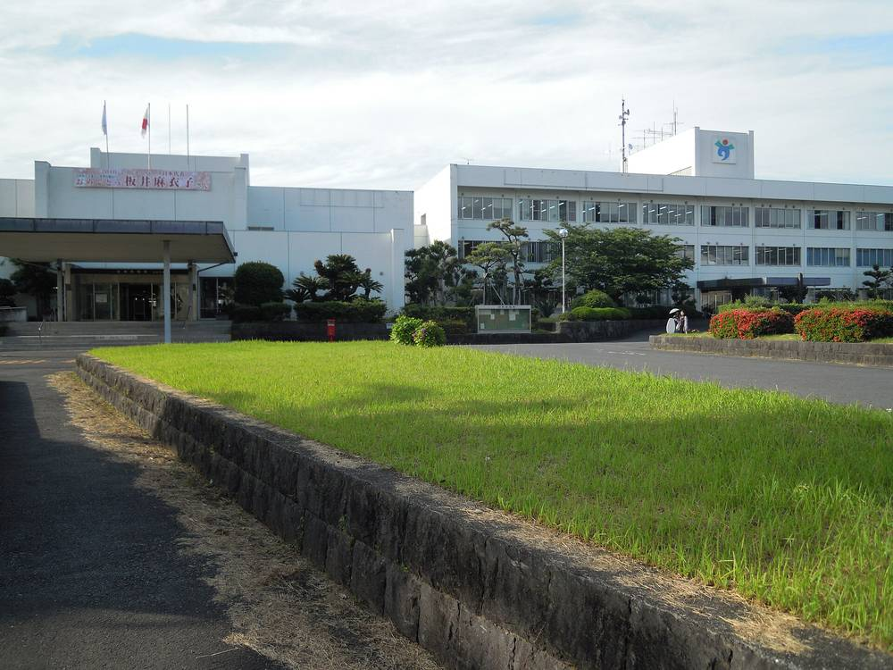

일본 우스키시 지역전력회사 '우스키에너지', 과자 회사 농지 3,000㎡ 위 영농형 태양광 전기를 시 공공시설 2곳에…연 7만6,000kWh 예상

오이타현 노쓰마치, 높이 약 3m 기둥 위 패널 아래서 대학생들이 생강 유기재배 실증…산·관·학 함께 그늘 속 생육·여름 농작업·연작 가능성 살펴, 결과는 내년 1월 공개
일본 오이타현 우스키시의 지역전력회사 '우스키에너지'가 시내 과자 회사의 농지 위에 지은 영농형 태양광 시설의 전기를 시 공공시설 2곳에 대고 있다. 시설은 우스키시 노쓰마치(野津町)에 있는, 생강을 넣은 지역 명과 '우스키 센베이' 등을 만드는 고토제과(後藤製菓)의 경작지 약 3,000㎡에 들어섰으며, 높이 약 3m 기둥 위에 올린 패널로 발전하고 패널 사이로 드는 햇빛으로 농사를 짓는다. 올해 1월 중순 가동을 시작해 9월 말까지의 실적으로 보면 연간 발전량은 약 7만6,000kWh가 될 것으로 예상된다. 패널 아래에서는 오이타단기대학 원예과 2학년 학생 4명이 그늘에서도 자라는 생강을 잘 기를 수 있는지, 그늘이 늘어 여름 농작업이 편해지는지, 유기농으로 연작이 가능한지를 살피는 실증 연구를 하고 있다. 이 연구는 산·관·학 협력 조직 '오이타 지역연계 플랫폼' 사업으로 올해 4월부터 대학과 고토제과, 우스키에너지, 우스키시가 함께 해 왔으며, 학생들은 10월 28일 수확 날 지도 교수와 함께 생강의 키와 잎 색, 흙의 수분을 재고 수확한 생강의 무게를 달았다. 연구 결과는 내년 1월 플랫폼 누리집에 공개될 예정이며, 설비 용량과 전기를 받는 공공시설의 이름은 알려지지 않았다.
시민에너지 관점
일본 지바현 소사시에서는 주민과 농민이 세운 시민 발전회사가 시민 출자를 모아 농지 위에 영농형 태양광을 짓고 패널 아래에서 콩과 보리를 기르며, 전기를 판 수익의 일부를 마을 농업과 지역 살리기에 돌려 왔다. 우스키의 사례는 여기서 한 걸음 나아가, 시의 지역전력회사가 지역 기업 농지에서 만든 전기를 시 공공시설에서 쓰게 해 에너지 비용으로 지역 밖으로 나가던 돈을 시 안에 붙잡아 둘 수 있는 구조를 보여 준다. 패널 그늘 아래서 농사가 제대로 되겠느냐는 의문이 있지만, 대학이 생강의 생육과 흙을 직접 재고 그 결과를 공개하는 방식이라면 농민이 숫자를 보고 판단할 수 있다. 우리 지자체와 농촌도 영농형 태양광의 전기를 마을회관과 공공시설에 쓰는 지역 생산·지역 소비 구조를 만들되, 그 발전소의 지분은 농민과 주민이 함께 갖도록 처음부터 설계해야 한다.
출처: 読売新聞オンライン 2026-11-02 요미우리신문 온라인(서명 없음) 원문 보기
臼杵市の地域電力会社「うすきエネルギー」、菓子メーカーの農地約3,000㎡の営農型太陽光の電気を市の公共施設2か所に…年間約7万6,000kWhの見込み
大分県野津町、高さ約3メートルの支柱の上のパネルの下で短大生がショウガの有機栽培を実証…産官学で日陰での生育・夏場の農作業・連作の可能性を探り、成果は来年1月に公開
大分県臼杵市の地域電力会社「うすきエネルギー」が、市内の菓子メーカーの農地に整備した営農型太陽光発電施設の電気を、市の公共施設2か所に供給している。施設は臼杵市野津町にある、ショウガを使った銘菓「臼杵煎餅」などを製造する後藤製菓の耕作地約3,000平方メートルに設けられ、高さ約3メートルの支柱の上に載せたパネルで発電し、パネルの間から差し込む日光で農業を営む。今年1月中旬に稼働を始め、9月末までの実績から見て年間発電量は約7万6,000キロワット時になる見込みだ。パネルの下では大分短大園芸科の2年生4人が、日陰でも育つショウガを順調に栽培できるか、日陰が増えることで夏場の農作業が楽になるか、有機農業で連作ができるかを探る実証研究に取り組んでいる。研究は産官学連携組織「おおいた地域連携プラットフォーム」の事業として今年4月から短大、後藤製菓、うすきエネルギー、臼杵市が連携して進めてきたもので、学生たちは10月28日の収穫の日に指導教員とともにショウガの背丈や葉の色、土壌の水分量を測り、収穫したショウガの重さを量った。成果は来年1月に同プラットフォームのホームページで公開される予定で、設備容量や電気を受ける公共施設の名前は明らかにされていない。
市民エネルギーの視点
千葉県匝瑳市では、住民と農家がつくった市民発電会社が市民の出資を集めて農地に営農型太陽光を建て、パネルの下で大豆や麦を育てながら、売電収益の一部を地域の農業や地域おこしに回してきた。臼杵の事例はそこから一歩進み、市の地域電力会社が地元企業の農地でつくった電気を市の公共施設で使うことで、エネルギー代として地域の外へ流れていたお金を市内にとどめうる仕組みを示している。パネルの陰で農業がきちんとできるのかという疑問もあるが、大学がショウガの生育や土壌を自ら測り、その結果を公開するやり方なら、農家は数字を見て判断できる。韓国の自治体と農村も、営農型太陽光の電気を集落の会館や公共施設で使う地産地消の仕組みをつくりつつ、その発電所の持ち分は農家と住民が共に持つよう最初から設計すべきだ。
出典: 読売新聞オンライン 2026-11-02 読売新聞オンライン（署名なし） 原文を読む
日本臼杵市地方电力公司"臼杵能源"把点心企业农地约3,000平方米上的农光互补电力供给市内2处公共设施…预计年发电约7.6万千瓦时
大分县野津町，高约3米支柱上的光伏板下，短期大学学生开展生姜有机栽培实证…产官学合作考察荫下生长、夏季农活和连作的可能，成果明年1月公布
日本大分县臼杵市的地方电力公司"臼杵能源"（うすきエネルギー）正把在市内一家点心企业农地上建设的农光互补太阳能设施所发电力，供给市内2处公共设施。该设施位于臼杵市野津町，建在生产以生姜为原料的当地名点"臼杵煎饼"等产品的后藤制果约3,000平方米耕地上，以架在高约3米支柱上的光伏板发电，并利用从板间照进的阳光种地。设施今年1月中旬投运，按截至9月底的实绩推算，年发电量预计约为7.6万千瓦时。光伏板下，大分短期大学园艺科4名二年级学生正在开展实证研究，考察耐阴的生姜能否在板下顺利生长、阴凉增多后夏季农活是否更轻松，以及有机农业能否连作。这项研究是产官学合作组织"大分地区联合平台"的项目，今年4月起由该短大、后藤制果、臼杵能源和臼杵市共同推进；10月28日收获当天，学生们在指导教师带领下测量了生姜的株高、叶色和土壤水分，并称量了收获生姜的重量。研究成果预定明年1月在该平台网站公布，设施容量和接受供电的公共设施名称尚未公开。
市民能源视角
在日本千叶县匝瑳市，居民和农民创办的市民发电公司募集市民出资，在农地上建设农光互补太阳能，在光伏板下种植大豆和麦子，并把卖电收益的一部分投入当地农业和地方振兴。臼杵的做法更进一步：市属地方电力公司让本地企业农地所发的电在市内公共设施使用，展示了一种能把原本以能源费用形式流出地区的钱留在市内的结构。有人怀疑光伏板阴影下能否好好种地，但如果由大学亲自测量生姜生长和土壤状况并公开结果，农民就能看着数字作判断。韩国的地方政府和农村也应建立把农光互补电力用于村会馆和公共设施的就地生产、就地消费结构，同时从一开始就把这些电站的股份设计为由农民和居民共同持有。
来源: 読売新聞オンライン 2026-11-02 读卖新闻在线（未署名） 查看原文
Usuki Energy, the municipal power company of Japan's Usuki, supplies two city facilities with power from an agrivoltaic array on 3,000m² of a confectioner's farmland, expecting about 76,000kWh a year
In Nozu, Ōita Prefecture, college students are testing organic ginger growing beneath panels on posts about 3m high; industry, government and academia are checking growth in shade, summer farm work and repeat cropping, with results due in January
Usuki Energy, the local power company of the city of Usuki in Ōita Prefecture, Japan, is supplying two of the city's public facilities with electricity from an agrivoltaic installation it built on farmland belonging to a local confectioner. The installation stands on about 3,000m² of cropland in Usuki's Nozu district owned by Goto Seika, which makes the city's ginger-flavoured speciality "Usuki senbei" crackers among other sweets, and it generates power from panels mounted on posts about 3m high while crops are grown in the sunlight falling between them. It began operating in mid-January this year, and based on its output to the end of September it is expected to generate about 76,000kWh a year. Under the panels, four second-year horticulture students from Ōita Junior College are running a trial to see whether ginger, which tolerates shade, can be grown well there, whether the extra shade makes summer field work easier, and whether it can be grown organically in the same plot year after year. The trial is a project of the Ōita regional cooperation platform, an industry-government-academia body, and has been carried out since April by the college, Goto Seika, Usuki Energy and the city; on harvest day, October 28, the students and their supervising associate professor measured the plants' height, leaf colour and soil moisture and weighed the harvested ginger. The results are due to be published on the platform's website in January, and the installation's capacity and the names of the public facilities it supplies have not been disclosed.
Citizen Energy View
In Sōsa, Chiba Prefecture, a citizens' power company founded by residents and farmers raised investment from the public to build agrivoltaic arrays on farmland, growing soybeans and barley beneath the panels and putting part of its power-sales income back into local farming and community revival. Usuki goes a step further: by having the city's own power company use electricity generated on a local firm's farmland in municipal buildings, it shows a structure that can keep inside the city money that used to leave the area as energy bills. Some doubt whether farming really works in the shade of panels, but when a college measures the crop's growth and the soil itself and publishes the results, farmers can decide on the basis of the numbers. Korean local governments and rural communities should likewise build local-production, local-consumption systems that use agrivoltaic power in village halls and public facilities, while designing from the outset for farmers and residents to share ownership of those plants.
Source: 読売新聞オンライン 2026-11-02 Yomiuri Shimbun Online (no byline) Read the original